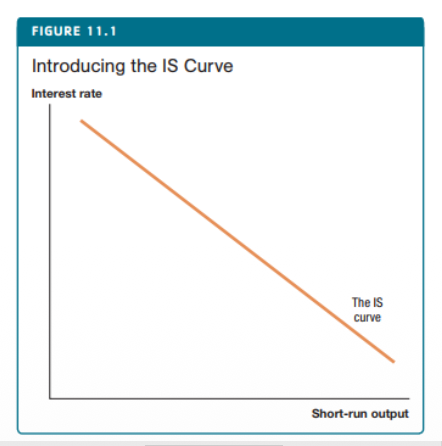
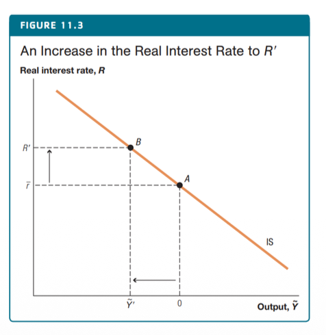
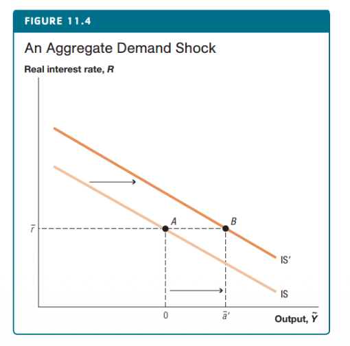
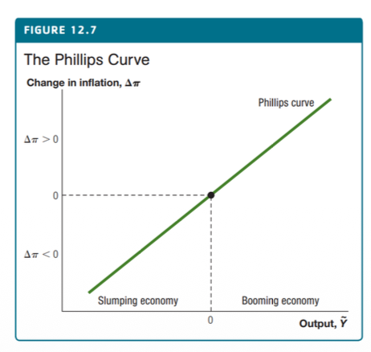
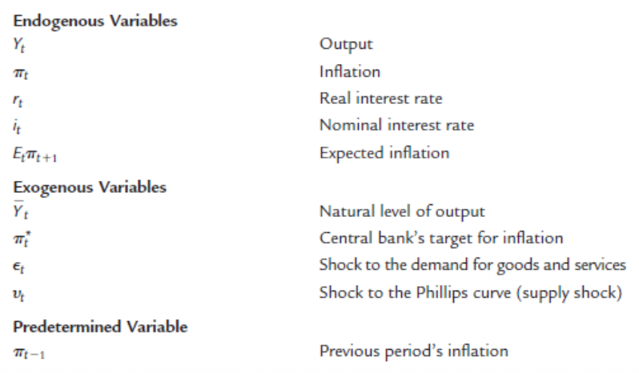
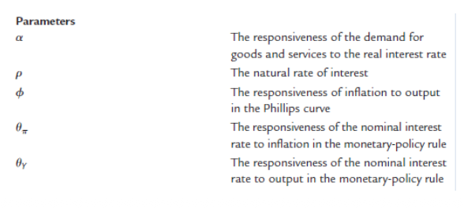
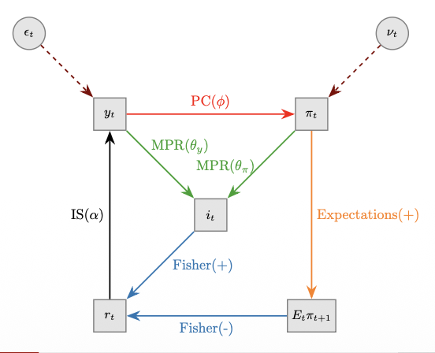

Model Structure
1. The Demand Side: The IS Curve
The macroeconomic model is built on three main equations: the Demand side (IS curve), the Supply side (Phillips curve), and the Interest rate side (Monetary Policy Rule). The demand side explains how output reacts to other variables, especially interest rates and inflation.
The basic idea is simple: output goes up when interest rates go down. We want to construct a model to show this exact relationship.
Microfoundations of Demand
Consumption Microfoundations
Modern models connect current consumption choices directly to current interest rates. When interest rates are higher, people prefer to postpone spending and save money for the future. This explains the relationship between total demand and interest rates.
Investment Microfoundations
Similarly, investment also depends heavily on interest rates. Like consumption, higher rates encourage saving. Also, for companies, the interest rate is the cost of borrowing money. So, a higher interest rate makes borrowing exterior funds more expensive, leading to less overall investment.
What specifically matters for consumption—the nominal or the real interest rate?
While the reward for saving money is the nominal interest rate, what consumers really care about is what they can actually buy (consumption), not just the money itself. To buy things in the future, consumers must pay future prices. Therefore, what really matters is the actual increase in purchasing power they gain by saving.
In conclusion, what truly drives demand is the real interest rate (adjusted for inflation).
The IS Curve Equation
Assuming that the total demand for goods and services determines short-term output, the model dictates:
The equation uses log variables, where $y_t$ is total output, $\bar{y}_t$ is the natural level of output, $r_t$ is the real interest rate, $\rho > 0$ is the natural rate of interest, and $\alpha > 0$ strictly implies output declines when the interest rate rises. $\epsilon_t$ encompasses all demand shocks (e.g., sentiment, government spending).
Interpretation: Imagine the economy in equilibrium: there are no shocks ($\epsilon_t = 0$), and the real interest rate equals its natural rate $\rho$. In this case, output $y_t$ is exactly at its natural potential level $\bar{y}_t$. But if the interest rate rises by 1 percentage point, consumers will prefer to save and delay their consumption. This drop in demand pushes output below its natural level, causing it to fall by $\alpha$.
Visualizations & Shocks
A change in interest rates causes a movement along the IS curve. On the other hand, demand shocks (positive or negative) will shift the entire curve. Demand shocks act as a catch-all category for unknown factors, like changes in household confidence ("animal spirits"), sudden changes in government spending, or external shocks like a foreign recession.



2. The Supply Side: The Phillips Curve
The supply side dictates how inflation behaves, taking the physical form of the Phillips Curve (PC).
The core logic of the supply equation is that inflation ($\pi_t$) is positively linked to output. In the equation, $\pi^e_t$ represents expected inflation, and $(y_t - \bar{y}_t)$ is the 'output gap'. The parameter $\phi > 0$ measures how sensitive inflation is to changes in output. Finally, $\nu_t$ represents any sudden supply shock.
Microfoundations
The main microeconomic reasons behind this relationship are: sticky prices (prices take time to adjust), sticky wages, or imperfect information.

3. Interest Rates & Model Synthesis
Our IS curve links output directly to the real interest rate. Because of this, we need to understand how nominal interest rates are set, and how they convert into real interest rates.
The Monetary Policy Rule
In modern economies, nominal interest rates are set by the central bank. The central bank chooses its target nominal rate, and then implements it through market operations (like repo rates or adjusting bank reserves).
We assume that the central bank follows a predictable system, which is well understood by all economic agents. We represent this with the Monetary Policy Rule (Taylor Rule):
The Taylor rule captures the idea that the central bank: (1) has a specific inflation target $\pi^*_t$, (2) works hard to keep inflation close to that target, and (3) wants to avoid severe recessions. When inflation is too high ($\pi_t > \pi^*_t$) or output is too high ($y_t > \bar{y}_t$), the central bank will increase interest rates to cool the economy down.
The assumption that $\theta_\pi > 0$ guarantees that nominal interest rates rise more than inflation does. This makes the real interest rate increase whenever there is an inflation shock, pushing inflation back down towards the target. This rule is known as the Taylor principle.
Interest Rate Smoothing: The basic formula suggests the bank reacts instantly and fully to any small change, which is not very realistic. In practice, central banks use smoothing, meaning they adjust rates gradually by considering both their current targets and past interest rates.
The Fisher Equation & Expectations
To find the real interest rate that drives the IS curve, the model uses the Fisher equation:
This rate depends entirely on Expected Inflation ($E_t\pi_{t+1}$). To use this, we must make an assumption about human behavior. Usually, we assume adaptive (backward-looking) expectations ($E_t\pi_{t+1} = \pi_t$). Other models might assume "anchored expectations" (where people simply trust the central bank's target), or "rational expectations" (where agents use all available information to predict the future).
Control of Rates
Central Banks only directly control short-term interest rates. However, it is the long-term interest rates that matter most to firms and households when borrowing. Because of financial markets, long-term rates are basically an average of current and expected future short-term rates (the expectations hypothesis). Therefore, by controlling short-term rates, the central bank can steer the whole economy.
4. Model Summary
The complete model uses the following variables and parameters:


